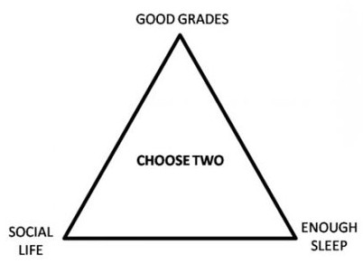
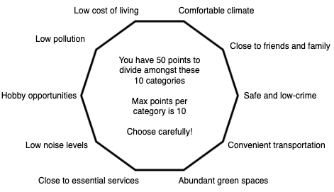

A look at literature and personal considerations related to housing variables.
This post was inspired by u/--MCMC--'s r/slatestarcodex post asking:
What do you prioritize when looking for a place to live? What does the happiness literature say gives most people the best bang for their buck?
This got me thinking about all the variables that come into play when searching for a place to live, both among and within cities, i.e., which city should one choose and where within the city:
Some of these affect populations significantly or marginally. I attempt to rank these in order of importance of consideration to help the questioning reader more easily make a decision. Please note I am a novice at analyzing scientific methods and can't distinguish between good and bad methods (within reason), so take the studies I cite with a grain of salt and check me.
It's important to note that there are tradeoffs in choosing where to live, and one can only get so many of their desires before having to sacrifice others. The infamous college "choose-two triangle" comes to mind:
Whereas the where-to-live question requires a shape with more sides and every option being considered:
Further, everyone is individual. I have coworkers who commuted 1.5 hours each way to work three to four days a week because they loved living in the country and the prices were cheap. I'd die if I had to commute more than 30 minutes one way. I have friends who pay exorbitant prices to live close to downtown and the fun part of my city. I'd hate myself if I paid their rent without getting equity. I have friends who have little green space near them and are a-okay with it. I'd be miserable if I didn't have a nearby place to mountain bike.
The one thing to take away from the following is that tradeoffs are everything. Everything. The only way to get more points on the choose 10 decagon is to have more money, and that solution isn't feasible for all. Finding a good place to live is a zero-sum game, and choosing the positive addends comes with a paired negative addend.
Commuting is the bane of many people's existence. They wake up, sit in traffic for an hour, work their 8-9 hour shift, sit in traffic for another hour, then do it all again the next day. It's not hard to see how it can be draining on one's sou...happiness.
The literature strongly supports this common sense notion.
I
In Stress that Doesn’t Pay: The Commuting Paradox, Stutzer and Frey examine commuting and its effects.
There are many negative side effects associated with commuting:
Commuting is associated with many environmental stressors like noise, crowds, pollution and thermal conditions. Stress that doesn’t pay: the commuting paradox that cause negative emotional and physical reactions. Reactions depend, of course, not only on the time and distance involved in commuting, but also on other factors that interact with the stressors mentioned above. Commuting is more stressful when people are not in control of certain factors that can crop up during the drive to work, e.g. due to traffic congestion or when they are under considerable time pressure. The strain of commuting is associated with raised blood pressure, musculoskeletal disorders, lowered frustration tolerance and increased anxiety and hostility, being in a bad mood when arriving at work in the morning and coming home in the evening, increased lateness, absenteeism and turnover at work, as well as adverse effects on cognitive performance; see Koslowsky et al. (1995)
The benefits they discuss include lower housing costs or higher wages (to compensate for the longer commute and keep the employee), which can offset the commuting cost and even make a net positive. However, with all of the other problems associated with commuting, this fails to qualify as a legitimate benefit in my book.
The results are fairly clear:
results indicate that there is a sizable negative correlation between commuting time and individuals’ well-being. For each subsequent quartile of longer commuting time, we find, on average, a lower reported satisfaction with life. While life satisfaction is 7.23 points, on average, for people who commute 10 minutes or less (first quartile), average satisfaction scores for the top fourth quartile (commuting time more than 30 minutes) is 6.99 points, i.e., 0.24 points lower.
People who commute 22 minutes (one way), which is the mean commuting time in Germany, report, on average, a 0.103-point lower satisfaction with life. This phenomenon is robust to a wide range of possible response biases, and it is not explained by compensation at the level of households.
II
A Survey Method for Characterizing Daily Life Experience: The Day Reconstruction Method, Kahneman et al. "assesses how people spend their time and how they experience the various activities and settings of their lives, combining features of time-budget measurement and experience sampling. Participants systematically reconstruct their activities and experiences of the preceding day with procedures designed to reduce recall biases".
Commuting was the lowest valued positive mean affect field (3.45) and the third highest valued negative mean affect field (0.89), only behind "taking care of my children" (0.91, ouch!) and "working" (0.97).
III
How commuting affects subjective wellbeing, Clark et al. "presents findings from analyses of the impact of commuting (time and mode) on multiple aspects of Subjective Well-Being (SWB), including: satisfaction with life overall and the SWB sub-domains of job satisfaction, satisfaction with leisure time availability and self-reported health. Measures of strain and mental health (GHQ-12) are also examined."
A few highlights from the abstract:
It is found that longer commute times are associated with lower job and leisure time satisfaction, increased strain and poorer mental health.
Despite these negative associations with the SWB sub-domains, longer commute times were not associated with lower overall life satisfaction...Workers in England appear to be successful in balancing the negative aspects of commuting against the wider benefits, e.g. access to employment, earnings and housing.
Overall, the study indicates that shorter commute times and walkable commutes can contribute to improved SWB—particularly through the release of leisure time. But life satisfaction overall will only be maintained if the benefits of undertaking the commute (earnings and satisfactory housing/employment) are not compromised.
In her article Long Commutes Destroy Happiness, Research Shows. Here's What to Do About Them, Zetlin explains tradeoffs as related to commute times:
Most economists — and most employers — think of commuting as a tradeoff, particularly in an economy where unemployment is low and people presumably have a wide choice of available jobs. You agree to a long commute, which you hate, in order to do a job that you love, or that pays well, or both. Or the long commute allows you to live in a larger or better home, with more access to grass and trees, or one that is closer to your spouse or partner's job. Assuming (as economists do) that people make rational choices, the dreariness of the commute is balanced by something else that improves your well-being, so that people with long commutes should not be fundamentally unhappier than everyone else.
Which matches with what Clark et al. found: "life satisfaction overall will only be maintained if the benefits of undertaking the commute (earnings and satisfactory housing/employment) are not compromised", i.e., the tradeoff is net-zero and positive. Thus, it's important to consider other factors in one's living situation. If other factors are good, a long commute may not be too bad. If they're not-so-good, the long commute may be bad.
It's often reported (n < 10 (this is personal data!)) that driving in minimal traffic is better than stop-and-go traffic even if the former takes longer. This can be a major factor to commuting: if there's a 60-minute, no traffic commute vs. a 30-minute, stop-and-go commute, which is better? Part of this is lack of control. There is nothing an individual can do about traffic: they are left powerless and must succumb to the traffic machine's will.
From another perspective, no traffic allows one to "zone out" a bit more, requiring less attention (and thus energy) than being in heavy traffic requires. I suspect the heightened awareness required in traffic contributes to stress and irritability while driving.
Evans et al.'s The Morning Rush Hour: Predictability and Commuter Stress found that "Men and women who perceived their commute to work as more unpredictable felt greater levels of stress and evidenced higher elevations of salivary cortisol".
Gottholmseder et al.'s Stress perception and commuting found that:
Being in the ‘very stressed’ or ‘stressed’ category becomes ceteris paribus less probable as predictability increases, whereas probabilities of being in the ‘relaxed’ or ‘very relaxed’ category increases with predictability . Thus, we conclude that predictability does play a role in determining the perceived stress level after commuting in the morning, but the effect is more due to variability and less due to commuting experience.
Take a commute that involves five minutes of road driving, 20 minutes of highway driving, and another five minutes of road driving. This situation happens, on average, three to four days a week. The other one or two days has either minor or major traffic. This 30 minutes of driving can easily change into an hour all because of a reckless driver, and there's nothing to forewarn this happening. Five commutes in a row were just fine, but now this has to happen. Gah!
While I abhor long commutes, having a predictably-long commute is almost as important (up to a certain duration). Knowing I have a 30-plus-or-minus-five minute drive home every day, regardless of the time of day, is a major burden off my shoulders, rather than wondering when I get in the car how long it take me. Not knowing if the commute will take 15 or 30 or 60 minutes is a toll on the mind most don't want. It's also important to note that public transport can be unpredictable.
In case shortening the commute is not an option, there are ways to mitigate its effects:
Cost of living (COL) influences someone's standard of living, thus encompassing everything one would spend money on: housing, food, fun, transportation, etc. It varies significantly based on location. For example, if I live in Dallas and make $100,000/year, I would need to make $86,000 to maintain my standard of living in Cleveland. And while salaries often correlate to COL (i.e., higher COL means higher salary, else no one would move there), they do not necessarily keep up with ever-increasing costs of living caused by inflation or desirability of said area.
But before looking at studies, it's worth it to just consider how much of an effect COL has on well-being by giving some hypotheticals:
The point of these examples is multi-fold. First, lifestyle and COL are often interwoven with each other. Flashier lifestyles often require high COL places because they are, well, flashy. Second, low COL can be maintained with significant sacrifices (depending on the person). Third, money adds up quick—putting numbers down in a spreadsheet will sober up high rollers real quick.
Now, onto the specifics.
Rentfrow et al.'s Happy States of America: A state-level analysis of psychological, economic, and social well-being found that:
Median housing value and well-being were also strongly related, as can be seen in the scatterplot in the bottom left panel of Fig. 2. That relationship suggests that people are happier in places where housing is comparatively expensive. To determine whether that association reflected the links between well-being, income, and per capita GRP, we ran a partial correlation between housing values and well-being, controlling for GRP per capita and income. The results indicated that the relation between housing values and well-being remained significant (rs = .45, .37, p < .01, controlling for GRP per capita and income, respectively). As before, a non-linear relationship emerged, with the same set of states in the bottom, but with Hawaii and California as two extreme outliers in terms of housing values.
Surprisingly, I was not able to find any more literature explicitly look at correlations (and if causation is present) between COL and well-being. I will continue searching.
A crucial part of location is proximity to activities and attractions. Traveling long distances has obvious (in)convenience and cost issues (see the Commuting section), along with possible mental health detriments (or benefits!) due to being isolated. But similar to commuting, lack of close proximity to certain amenities can be offset by a location's positive features: cost, scenery, remoteness, laws (or lack of enforcement), etc.
Literature was scarce on this topic, so a majority of the discussion will be speculation. As a reminder, everything comes down to personal preferences.
Essential services include groceries, childcare (for some), emergency services, and healthcare facilities, among others not listed. While these aren't literally required for all people, they are practically required. Having to regularly travel for groceries is inconvenient, especially if something is needed quickly. Most of these can be mitigated with planning, knowledge, or extra work: food can be home-grown; children can be cared for by one parent, a grandparent, or a sibling; physical security can be provided and resolutions solved by a 12-gauge (just kidding!); some medical emergencies can be fixed with proper training.
Conveniences include restaurants and bars, entertainment, retail stores, etc. The advent of Amazon, the ubiquity of shipping availability, and the convenience and accuracy (in some cases) of online shopping has rendered the need to be close to brick-and-mortar retailers obsolete. Restaurants are a pretty traditional pastime for most people, especially for those who do not enjoy being in the kitchen. Further, lack of variety of food/drink venues may cause unhappiness. A small town with the best chicken fried steak in the world won't be the best after going there four weeks in a row. Lack of fun places to go can be mitigated through hobbies (see next paragraph), but most fun businesses are brick-and-mortar for a reason: they can't be replicated at home. A dance hall loses its allure when it's only two people dancing to music coming out of a loudspeaker connected to a phone and an amusement park is way more fun than a DIY Slip ’N Slide with family. There's an experience element that just isn't the same when it's at home. Alternate transportation methods also fall under this category. Smaller airports can force higher costs due to lack of destination options, as well as limited access from visiting family or friends for the same reason. Public transport is helpful in reducing commute time and allowing the commute to be more productive.
Some notes on public commuters' happiness. St-Louis et al.'s The happy commuter: A comparison of commuter satisfaction across modes finds that:
The mean satisfaction levels by mode show that the most satisfied commuters are, in order: pedestrians (84.98%), train commuters (84.15%), cyclists (81.85%), drivers (77.42%), metro users (75.62%), and bus users (75.47%). Based on an ANOVA analysis, we find that pedestrians, train commuters, and cyclists display a significantly higher satisfaction level than drivers, metro users and bus users (F = 60.932; p < 0.05).
This is consistent with previous studies that found that active transportation users and rail passengers are, on average, more satisfied with their travel. However, this may be due to the single-mode sampling criterion; for instance, the single-mode train users used in this sample probably live within walking distance from a train station, which means this study does not pick up on all elements usually associated to the train, such as having to drive to the station or transfer modes. Regardless, it is important to recognize that satisfaction with the train itself is high.
comparing coefficients shows that pedestrians, cyclists, and bus users are less negatively impacted by longer travel times than drivers, metro and train users.
The large variations in the mean additional time budgeted by mode (see Table 1) is one possible measure of the predictability or consistency of a mode's travel time: while pedestrians and cyclists budget less than 6 minutes, drivers and bus users budget more than 14 minutes. In fact, bus users and drivers show significantly lower satisfaction the more additional time is budgeted for. [Note that this ties directly back to the Predictability section]
Other select studies:
Access to personal hobbies (or potential hobbies) needs to be considered. While the need for physical proximity has also been rendered somewhat obsolete for some hobbies through the rise of streaming platforms, games and their enhanced connectivity, and other digital entertainment vehicles that just need an internet connection, there are still some that do require in-person attendance. Mountain biking requires trails; rock climbing requires rocks, walls, and mountains; dancing arguably requires a studio; tennis requires courts. The examples go on. Not discussed here is the impact hobbies have on both mental and physical well-being, which is well-documented. A few select studies:
Culture and demographics (C&D) of an area can make one feel welcome or like an outlier. A young family moving into an elderly neighborhood makes them long for parents and kids of a similar situation; senior citizens moving into an up-and-coming neighborhood makes them long for others they can relate to; a devout Christian moving to a predominantly non-Christian area with no nearby churches feels isolated from his community. C&D includes religion, language, race, ethnicity, age, background, socioeconomic status, hobbies, education level, family status, class, food and drink, and even small things like barbers who can cut ethnic hair properly.
This section is only applicable to singles (I make the gross assumption that couples currently or will eventually live together), but important nonetheless. Two considerations will be discussed: distance to potential significant others (SO) and possibility of meeting a SO while out and about, the latter of which relates directly to the former.
I once went on a date with a girl who lived an hour away from me on a good day. When I found this out mid-date, I knew it wasn't going to work out. I'd argue distance is negatively correlated with the likelihood a budding relationship will work out, i.e., the farther away they live from each other, the less likely the relationship will last. Developing a relationship takes "time on task", but at what cost? Driving 30 minutes after work, and then another 30-45 home after spending time with the SO? It's much easier to have them live a few minutes away. Again, this comes back to the dissatisfaction associated with driving.
(Note: this paragraph applies just as much to the next section on friends.) How to accommodate for this? Find the highest density areas of potential SOs and live less than 15 minutes from there (assuming nothing else is being taken into account). Take my city, Dallas, for example. Everyone my age who isn't married and settled down lives in a select few places: Lower Greenville, Oak Lawn, Uptown, or Knox Henderson. Looking at these on a map, they are all concentrated within a two mile radius of each other. As of 9:45pm on a Tuesday evening, I'm 25 minutes away—not horrible. Earlier today at 4:30pm, it would have taken between 30-70 minutes—horrible. This is one regret I have with purchasing my house where and when I did. While the time was a'tickin and housing prices probably weren't going down when I was looking, I did not take into account the sense of isolation I would feel.
There are options to reduce the negative effects if living closer is not an option:
Another regret I have about my house choice is the neighborhood it's in. While fairly nice and quiet, I do not relate to any of my neighbors: they are all families or older people who are retired or close to. The only neighborhoods that were within my search criteria of price and commute time to work were of similar demographics; the neighborhoods that would have satisfied my neighborly desires were out of my price range (although an acceptable distance to work). There's a sense of isolation and FOMO abound here, and I do not sense it going away soon.
Proximity to friends is probably less of an issue because not as much time is needed to develop the relationship, meaning the longer travel times are more tolerable because they are less frequent. Further, the time spent may not be at someone's house/apartment like it tends to be with SOs, but rather out doing something.
Climate, which includes temperature, precipitation, humidity, and wind, among others, can arguably play a large role in location satisfaction.
Maddison and Rehdanz's The Impact of Climate on Life Satisfaction is the only study I found regarding well-being and climate, which finds that:
countries with climates characterised by a large number of degree-months enjoy significantly lower levels of life satisfaction [i.e., significantly hotter or colder than 18.3 °C]
The most preferred climate is seemingly one where monthly mean temperatures do not deviate much from 65°F (18.3°C)
where degree-months are the summation of the difference of each month's average temperature and a base mean temperature of 18.3 °C, or, in other words, how hot/cold a location is.
I could not find any other studies that directly looked at the relationship between climate and life satisfaction.
Another consideration is the prevalence of sunlight. Lack of sunlight and its correlation to depression is well-established. (Obviously this feature only matters if it's actually taken advantage of, i.e., by going outside.)
Part of climate's contribution comes down to straight personal preferences, which can be influenced by genetics (higher cold tolerance opens up more places to live).
Climate acclimatization is proven and should be considered in this section. Physical preferences stem from comfort, and if one can become more comfortable in certain climates over time, then their preferences towards said climates become more favorable.
Some resources on climate acclimatization that can be used :
Cohen's The Effect of Crime on Life Satisfaction investigates "crime’s effect on life satisfaction using a combination of victimization and subjective survey data", finding that "while being burglarized has a large and significant effect on a victim’s overall life satisfaction, neither county‐level crime rates nor neighborhood safety appear to have very large effects on daily life satisfaction for the average American".
A few excerpts:
The effect of moving from an area perceived to be safe to an unsafe area reduces life satisfaction by .060 (a reduction in life satisfaction of about 2.3 percent from the base of 2.226 when living in a safe area). Thus, perceived neighborhood safety has a much larger effect on life satisfaction than does the objective county-level crime rate. Not surprisingly, an actual criminal event has an even more significant effect on life satisfaction. The expected reduction in life satisfaction from a burglary is .173 from a base of 2.151—a decrease of 8.0 percent, which is more than three times the effect of moving from a safe to unsafe area.
Perceived neighborhood safety is relatively more important than county-level crime rates. Living within a mile of an area perceived to be unsafe reduces life satisfaction by .060 relative to not living that close to an unsafe area. However, controlling for actual victimization in a smaller sample once again reduces the significance level of this finding to p < .10 , which calls into question the strength of the results. One reason we might not observe any reduction in life satisfaction for those who live in unsafe neighborhoods is the fact that these same individuals are already compensated for this higher risk of victimization through lower housing and rental prices. Thus, higher disposable income might offset the effect of less safety.
There is ample opportunity to mitigate the likelihood of burglary (or at least the concern of it):
Regression models indicated an unexpected positive association between alarm ownership and burglary rates, although that relationship may be moderated by poverty rates. Additionally, the strength of the association between burglary and alarm ownership appeared to vary widely from year to year.
The results indicated that three factors influence the behavior of burglars: the items they expect to find, the accessibility of the house, and the risks involved. Burglars initially become interested in a target as a result of its outward appearance and what it indicates about the prospective loot. When looking for ways of entering, burglars are deterred by visible alarm systems, window bars, secured shutters, safety glass, and glass bricks. Hardwood doors with complicated safety locks also serve as deterrents. However, no security system is impenetrable if enough time is available. Therefore, introducing risk factors that raise the likelihood of detection increase the effectiveness of security measures. Thus, properties that are secluded from the view of the neighbors through hedges or massive fences or that indicate the resident's absence may attract burglars. To prevent burglaries, householders should use a security checklist, make sure that neighbors can see the house clearly, create a sense of mutual neighborly attentiveness, and avoid habits that encourage burglaries.
Some other relevant papers:
Noise can come in a variety of forms, most of which aren't welcome: traffic, alternative transportation (trains, ships, planes), emergency vehicles, neighbors, construction (albeit most construction is temporary in theory), events, and businesses.
Urban and Macá's Linking Traffic Noise, Noise Annoyance and Life Satisfaction: A Case Study abstract states that:
traffic noise has a negative effect on residential satisfaction, but no significant direct or indirect effects on overall life satisfaction. Noise annoyance due to road and rail traffic noise has strong negative effect on residential satisfaction rather than on overall life satisfaction.
where residential satisfaction is defined as "one’s satisfaction with the quality of life in a specific area". Note that the model uses data from Czech cities nor did I attempt to understand the model's functions.
So, how much of a role does residential satisfaction play into one's happiness? Mouratidis's Commute satisfaction, neighborhood satisfaction, and housing satisfaction as predictors of subjective well-being and indicators of urban livability finds that:
Neighborhood satisfaction was found to relate to subjective well-being directly, but also indirectly via personal relationships satisfaction, housing satisfaction, and leisure satisfaction. Housing satisfaction was found to have a significant direct association with subjective well-being.
Assuming these correlations are transitive, noise annoyance due to road and rail traffic noise has a significant affect on subjective well-being. My inclination is that it is heavily skewed towards the negative side, i.e., noise makes life considerably worse, while no noise does not make life considerably better.
Railroads are spoken for in the previous section, but I'll add a short supporting anecdote. In 2011 my family and I were in Alpine, TX, staying at a small inn near some train tracks. The night train would blare its horn every night for what the front desk worker told us were "safety reasons". Not fun!
And another anecdote, but this time airplane-related. My childhood home is less than a half-mile (0.8 km) from being directly under the flight path of select arriving planes. The noise is loud enough that you have to pause phone conversations or videos when outside. While this is not that frequent, it is inconvenient. But like everything else, the tradeoff of getting all the other amenities in/around the neighborhood has allowed my family to look past it (not that my parents knew when they bought the house—apparently the realtor took them at strategic times to avoid any plane noise!).
Physical health effects of airports also need to be considered. Schlenker and Walker's Airports, Air Pollution, and Contemporaneous Health's abstract says it all:
We link daily air pollution exposure to measures of contemporaneous health for communities surrounding the 12 largest airports in California. These airports are some of the largest sources of air pollution in the United States, and they experience large changes in daily air pollution emissions depending on the amount of time planes spend idling on the tarmac. Excess airplane idling, measured as residual daily taxi time, is due to network delays originating in the Eastern United States. This idiosyncratic variation in daily airplane taxi time significantly impacts the health of local residents, largely driven by increased levels of carbon monoxide (CO) exposure. We use this variation in daily airport congestion to estimate the population dose-response of health outcomes to daily CO exposure, examining hospitalization rates for asthma, respiratory, and heart related emergency room admissions. A one standard deviation increase in daily pollution levels leads to an additional $540 thousand in hospitalization costs for respiratory and heart related admissions for the 6 million individuals living within 10km (6.2 miles) of the airports in California. These health effects occur at levels of CO exposure far below existing EPA mandates, and our results suggest there may be sizable morbidity benefits from lowering the existing CO standard.
I do not think that boats or ocean liners pose an issue to where one chooses to live. Residential areas are often too far to be affected by these.
While these can get lumped into the Traffic section, I think they merit their own section.
Living next to a police station or fire station has its perks for when either service is needed quickly, but the likelihood that it is needed is slim. But the likelihood that someone else—anyone else—needs it is much higher.
According to Extreme Tactical Dynamics (and other sources not listed here), "Most emergency vehicle sirens create 110-120 decibels when turned on. Police sirens can sound louder than ambulances or fire trucks because cop cars usually have their siren mounted low on the front bumper". 120 dB is the established threshold of discomfort, and examples of sounds at this level include rock bands, chainsaws, and subway trains. While the 120 dB noise decreases by the inverse square law, it will still be loud enough to hear when close, and especially when not inside the home.
Now how often do emergency vehicles get called? Police incidents will be ignored, as they often turn their sirens on while out patrolling. Fire incidents will be focused on, as they hang out in the station until they're needed. NFPA statistics say there were 36,416,000 fire department calls in 2020 between 29,537 fire departments, giving an average of 1240 calls per department, or just over three calls per day per department. (I suspect this follows a rough Pareto distribution, but there are no statistics on that.)
Assuming a total time of 30 seconds per interruption (time from when the siren is first heard to last heard), that's 1:30 minutes per day of decently-loud noise interruption.
No literature was found for this, but I suspect happiness is negatively correlated. I've never met someone who wants to hear their neighbors: their coughing, their laughing, their talking, their private time, their media. It's all a drain and skewed negatively, just like traffic.
Construction is temporary and will rarely (with the exception of a few special circumstances) last more than a year, making it a subjective factor to consider. A few thoughts and questions:
Does the neighborhood regularly host noisy events? Is the house/apartment next to a community center? Spending a few days and nights, both in off-season and on holidays, is a good judge of how quiet or loud the neighborhood is.
Taking count of nearby businesses and their nature (e.g., sewing club vs. night club) can give a better idea of the noise associated with the area. Look at the business's website for event dates.
People like nature: green plants, blue skies, mountains, etc. Living in a concrete jungle with little green space can be wearing. Just look at r/malelivingspace: one of their most common pieces of advice is to put more plants! The serenity associated with walking between trees or laying on grass is calming, and by extension, happiness-inducing. But don't just take my word for it!
Kwon et al.'s Urban green space and happiness in developed countries found that "the amount of urban green space and GDP are correlated with a nation’s happiness level. More specifically, urban green space and GDP are each individually associated with happiness".
The introduction says it all:
Green spaces such as parks, gardens, street trees, riversides, and even private backyards facilitate physical activity, social events, mental relaxation, and relief from stress and heat, leading to direct and indirect benefits for mental and physical health and well-being
and
Notably, five pathways through which greenery might have beneficial effects have been reported: relieving stress, stimulating physical activity, facilitating social interactions, generating aesthetic enjoyment, and facilitating a sense of shelter from and adjustment to environmental stressor...open green space promotes social cohesion by providing places for social contact; people can naturally encounter neighbors in local green spaces while walking dogs, gardening, and having outdoor parties, which enhances community engagement. Moreover, larger green areas such as parks can hold public events and activities, enabling social mixing between communities.
And some more pieces:
We find that individuals are happier in more scenic locations, even when we account for a range of factors such as the activity the individual was engaged in at the time, weather conditions and the income of local inhabitants. Crucially, this relationship holds not only in natural environments, but in built-up areas too, even after controlling for the presence of green space.where scenicness is measured by:
using crowdsourced scenic ratings from Scenic-Or-Not (http://scenicornot.datasciencelab.co.uk/). Participants rate Scenic-Or-Not photographs, each representing one square kilometre of Great Britain, on an integer scale of 1–10, where 10 indicates “very scenic” and 1 indicates “not scenic”
There was adequate evidence for associations between the amount of local-area greenspace and life satisfaction (hedonic wellbeing), but not personal flourishing (eudaimonic wellbeing). Evidence for associations between mental wellbeing and visits to greenspace, accessibility, and types of greenspace was limited.
Importance of green space (both in quality, quantity, and diversity) is especially important for those whose hobbies require green space. An outdoorsman who spends his free time camping, mountain biking, and climbing will feel much more deprived than a recluse who spends his days off playing videos games and watching YouTube. For those with more diverse hobbies, attempt to find places that can accommodate for all, or if confident in oneself, find one that excels in a specific area. For example, Austin, TX, has multiple mountain bike, climbing, and hiking locations within an hour or two radius of the city's center. On the other hand, Dallas has good mountain biking but subpar (read: non-existent) climbing and hiking scenes.
Pollution is placed directly after the Green Space section because they are often inversely correlated: more pollution means less green space and less pollution means more green space. And in the same vein, more pollution likely means the area is not-all-that-nice to look at, which, while not discussed here, is a negative characteristic of a location.
The health effects of pollution are also directly detrimental to health and well-being.
The article Smog in our brains from the APA outlines concerns:
found that older women who had been exposed to high levels of the pollutant experienced greater cognitive decline compared with other women their age (Archives of Internal Medicine, 2012)
Power and colleagues found that men exposed to high levels of black carbon had reduced cognitive performance, equivalent to aging by about two years, as compared with men who'd had less black carbon exposure.
children who had been exposed to higher levels of urban air pollutants known as polycyclic aromatic hydrocarbons while in utero were more likely to experience attention problems and symptoms of anxiety and depression (Environmental Health Perspectives, 2012).
children exposed to urban pollution were significantly more likely to have brain inflammation and damaged tissue in the prefrontal cortex
Abed Al Ahad et al.'s Air pollution and individuals’ mental well-being in the adult population in United Kingdom found that:
Higher odds of poor mental well-being was observed with every 10μg/m3 increase in NO2, SO2, PM10 and PM2.5 pollutants at both LSOAs and local-authority levels. Decomposing air pollution into spatial-temporal (between-within) effects showed significant between, but not within effects; thus, residing in more polluted local-authorities/LSOAs have higher impact on poor mental well-being than the air pollution variation across time within each geographical area. Analysis by ethnicity revealed higher odds of poor mental well-being with increasing concentrations of SO2, PM10, and PM2.5 only for Pakistani/Bangladeshi, other-ethnicities and non-UK born individuals compared to British-white and natives, but not for other ethnic groups.
I'd say pollution is a binary qualifier: it's either too polluted to look past and that city isn't livable, or it's fine to live in.
Just to drive the point home for those who missed it: where to live comes down to personal preferences. Literature can show who is happier on average based on certain situations, but that doesn't mean everyone is that way.
So, in sum, here are some specific, ranked, personal (i.e., what I would do based on the above information) suggestions of where to live both intra- (within) and inter (which) city. Note that:
Thanks to niplav and Megan Makela for reading the first draft.